Portfolio
marina
ervits
Senior design leader specializing in women’s contemporary knitwear, ready-to-wear, and cut & sew knits.
I build commercially successful knitwear and cut & sew assortments by connecting trend, yarn innovation, technical execution, vendor strategy, and measurable retail results.

About
Strategic design leadership for scalable, trend-forward knitwear and cut & sew collections.
Marina Ervits brings 18 years of expertise in women’s contemporary knitwear, fully fashioned sweaters, ready-to-wear, and cut & sew knits, combining yarn R&D, stitch engineering, commercial trend translation, and cost-to-value optimization. Her work bridges creative vision and operational execution for major retail partners.
Brand revitalization
Global vendor stewardship
Critical path ownership
Cross-functional influence
Business Impact
Commercial proof, kept close to the work.
Experience
Brand revitalization, high-volume assortments, and global product execution.
A career arc from runway knitwear craft to scaled retail leadership, with technical fluency held as a commercial advantage.
Senior Design Leader
Led transformation work for On 34th, delivering more than 300 styles annually, improving speed-to-market by 15%, and protecting design integrity across complex product lifecycles.
Designer
Directed seasonal development of high-volume knit and sweater assortments while managing critical path timelines, proprietary yarn and trim R&D, and cross-functional partnerships.
Designer
Translated seasonal trends into original sketches and runway mood boards while sourcing premium Italian and Asian materials for elevated knitwear structures.
Designer
Supported a brand launch through detailed tech packs, stitch development, lab dip approvals, and global factory corrections for multi-category knitwear.
Core Expertise
Creative direction grounded in material, margin, and make.
Technical Mastery
Fully Fashioned Knitwear · Yarn R&D · Stitch Engineering · Technical Construction
Commercial Leadership
Brand Revitalization · Cost Engineering · Global Vendor Stewardship · Team Leadership
Digital Fluency
Adobe Creative Suite · PLM · Digital Storyboarding · AI Integrated Workflow · Excel
Process Signals
Trend research
Global market reads become seasonal stories, key silhouettes, and commercially timed deliveries.
Yarn sourcing
Fiber blends, gauges, trims, and hand-feel are evaluated against cost, margin, and customer value.
Stitch engineering
Fully fashioned construction, jacquard, intarsia, rib, tuck, and cable structures carry the concept.
Fit approval
Technical specs, vendor iteration, and sample reviews protect quality from concept to production.
Collections
Selected On 34th sweater collection across Fall, Holiday, and transitional deliveries.
Strategic seasonal stories connecting customer insight, color and yarn direction, key-item architecture, and commercially scalable knitwear ideas.
Collection 01 · Fall 2025
In an English Country Garden
On 34th's Fall 2025 collection captures this town-and-country blend. Tweed, plaid, and heritage sweaters return, brightened with playful patterns. Trench coats and floral prints add feminine mischief. Thanks to centuries of awful weather, it's always sweater season in Blighty. Embracing British style and a sense of mischief, this collection is an ode to the countryside, perfect for those who find beauty in the rain, charm in chaos, and style in every moment. Welcome to the new classic for modern life, where town meets country with a wink and a smile.
- Objective
- Refresh the classic contemporary customer with a clear Q3/Q4 point of view.
- Strategy
- Use cables, lofty yarns, and mix-and-match sets to balance heritage codes with newness.
- Execution
- Translate yarn checklists and fit approvals into scalable key-item programs.
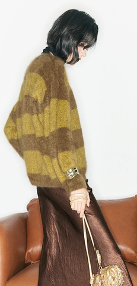
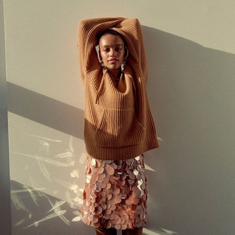
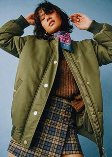

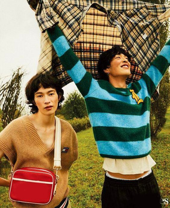
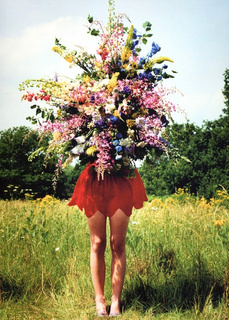
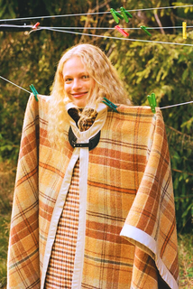
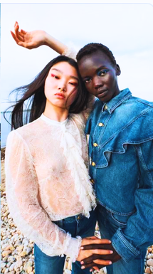
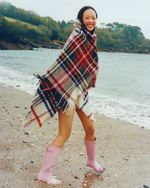
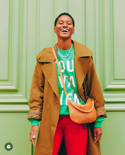
Collection 02 · Holiday 2025
All That Glitters
We’re taking the New Year’s Eve party to the country, where kicking off your shoes to dance on the sofa is highly encouraged. The look is all about effortless sparkle—think shimmering skirts, ruffles, and cozy sweaters that pair perfectly with your favorite jeans. It’s style made easy, letting you shine through the early hours until it’s time to trade the bubbles for pajamas, tea, and a quiet sunrise.
- Objective
- Build an easy holiday table around cozy shine, comfort, and broad outfit versatility.
- Strategy
- Combine high pile, tinsel shine, cloud-soft yarns, and graphic motifs for emotional pull.
- Outcome Signal
- Selected table programs show top-volume-driver and best-seller performance notes.

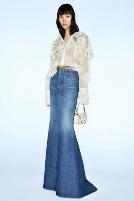
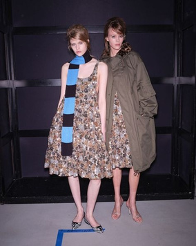
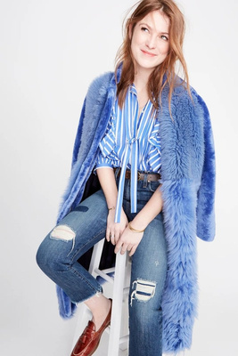
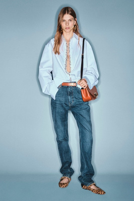
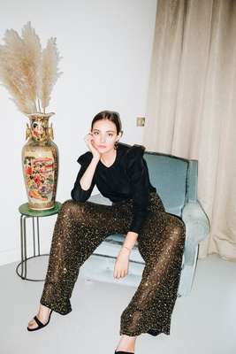
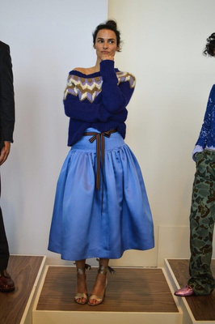
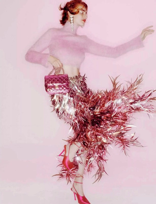
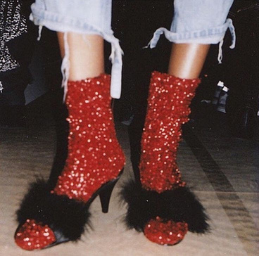

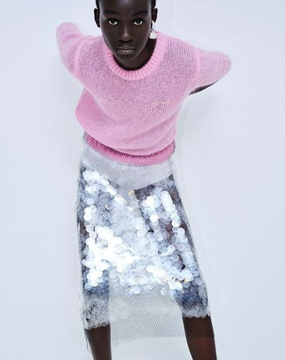
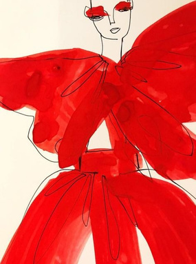
Collection 03 · Trans 2026
Brighter Days
Transition from festive cozy to the promise of spring with buttery yellows, effortless matching sets, and whimsical prints. This collection pairs soft, feminine chiffon with grounded denim, lightweight outerwear, and playful, cozy sweaters featuring a touch of Valentine’s charm. Blending romantic brights with neutrals, On 34th makes in-between seasonal dressing a breeze—embracing the present with a nod to the warmth ahead.
- Objective
- Move the customer from festive winter into spring with optimism and practical layering.
- Strategy
- Anchor the delivery in ribbed sets, easy cardigans, romantic brights, and heart graphics.
- Execution
- Use intarsia, rib, tuck stitch, and recycled yarn blends to keep novelty production-ready.
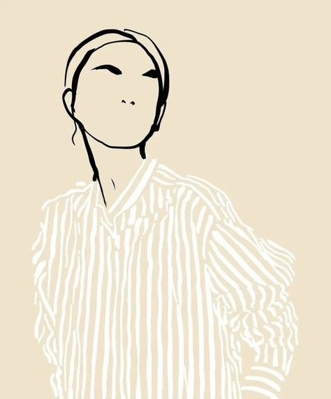
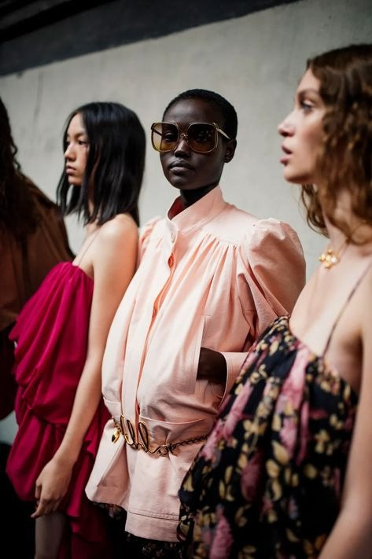
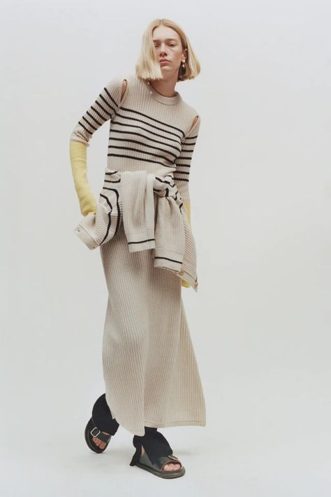
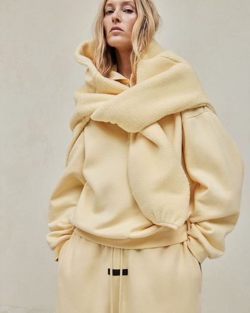
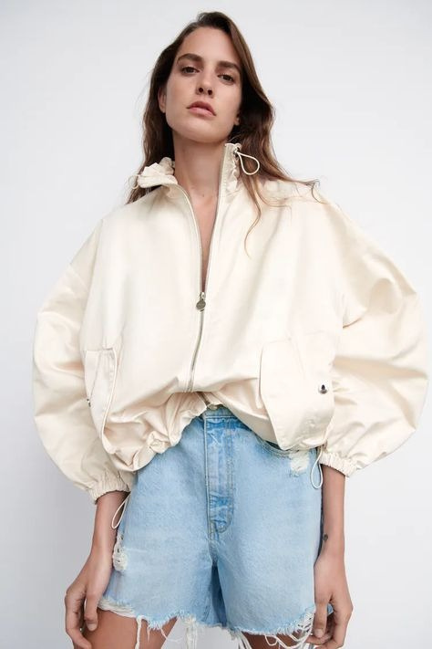
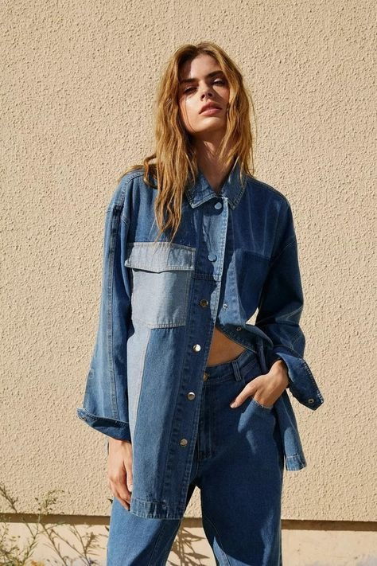

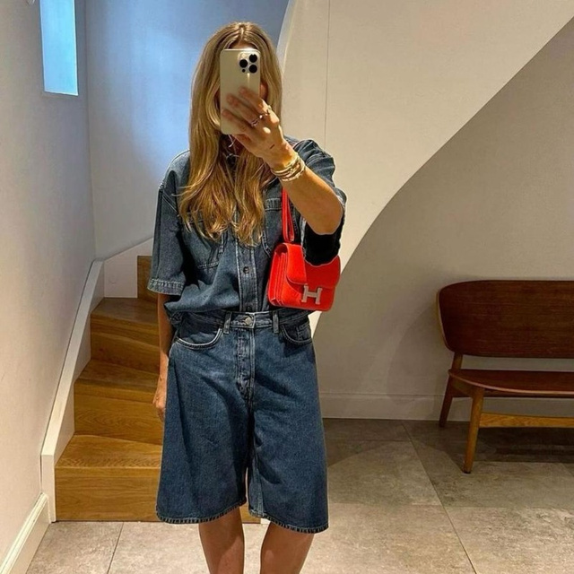
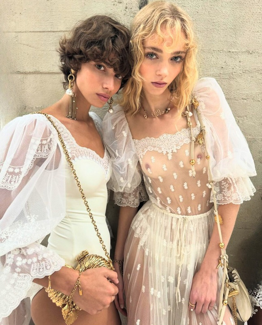
Featured Product Projects
Key items with stronger context, technical detail, and business relevance.
Development stories that connect the commercial brief to yarn decisions, fit approvals, scalable construction, and retail performance.

Key Item Program
Saddle Sleeve Sweater Tee
Light recycled-polyester blends, jersey construction, rib trims, and fit approval discipline supported a top-volume-driver program with 90% STU YTD.
See moreSet Architecture
Rib Cardigan + Pencil Skirt
Ribbed knit proportions, stripe placement, faux horn buttons, and a coordinated pencil skirt turn the matching-set idea into a polished outfit-building program.
See more
Holiday Table
Graphic Sparkle Crew
Ladderback jacquard, metallic yarn, and comfort-driven novelty made the holiday graphic story scalable, with 86-90% STU YTD signals on selected executions.
See more
Valentine Novelty
Heart Cardigan
Intarsia motifs, faux horn buttons, and recycled-polyester stretch yarn brought seasonal charm into a wearable easy-cardigan shape.
See more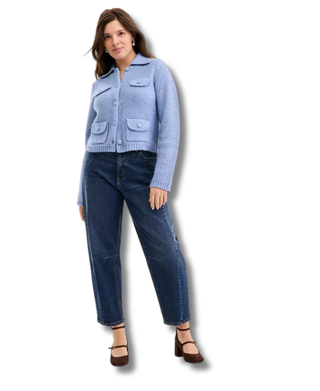
Refined Layering
Collared Sweater Jacket
Tuck stitch, tubular collar and pocket finishing, self-covered buttons, and flat-back rib trims show technical polish in a versatile transitional layer.
See moreDeck Archive
Need a deeper look into seasonal collections?
Resume
18 years of contemporary knitwear leadership, from runway craft to scaled retail execution.
Current Focus
Senior Design Leader for RTW knitwear at Macy’s Inc, leading On 34th knitwear strategy, premium cashmere initiatives, monthly trend analysis, and end-to-end line development.
Operating Strength
Balances design-to-value, high-precision tech packs, vendor partnerships, and cross-functional alignment with Merchandising, Product Development, Technical Design, and buying stakeholders.
Credentials
BFA in Fashion Design from Fashion Institute of Technology with a knitwear specialization. Guest judge for FIT’s Future of Fashion/Macy’s Empowered Design Award.